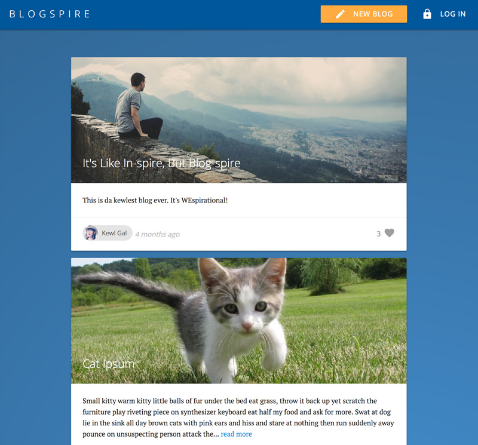
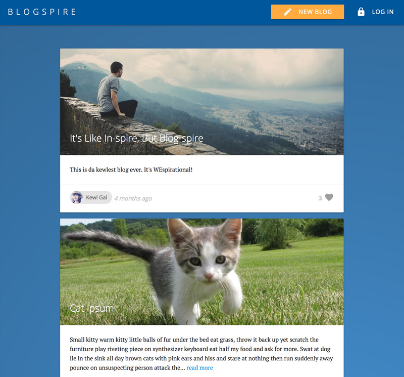

Mission-driven full stack developer with a passion for thoughtful UI design, collaboration, and teaching.
I’ve always sought out opportunities and challenges that are meaningful to me. Although my professional path has taken many twists and turns — from touring and recording artist, to employee of the year at a non-profit, to dean's scholar at UPenn, to small business owner and entrepreneur — I've never stopped engaging my passion to help others and solve problems.
As a web developer, I enjoy using my obsessive attention to detail, my unequivocal love for making things, and my mission-driven work ethic to literally change the world. That's why I’m excited to make a big impact at a high growth company.
Current Focus: Accessibility // React // Design Systems
EXPERIENCE
WESPIRE Full-Stack-Software-Developer
SaaS platform that enables enterprise companies to build, run, and measure their positive impact campaigns
DEVELOP PRODUCT
Contribute core features across entire stack (20k+ lines of code, 250+ pulls)
Lead front-end development, creating and documenting app-wide design system
Oversee transition from page-based styles to modular component styles
Guide best practices around accessible, semantic UI/UX
Startup Institute - Full Time Web Development | April 2017
Awarded by students in the Full-Time Web Development track to one instructor as recognition for "outstanding teaching, listening, mentoring."
INSPIRED BY YOU AWARD
WeSpire | June 2016
Quarterly award given to a team member who exemplifies WeSpire's purpose, vision, and values, goes above and beyond in their role to make a particularly positive impact on the company.
 WESPIRE Full-Stack-Software-Developer
WESPIRE Full-Stack-Software-Developer
 
